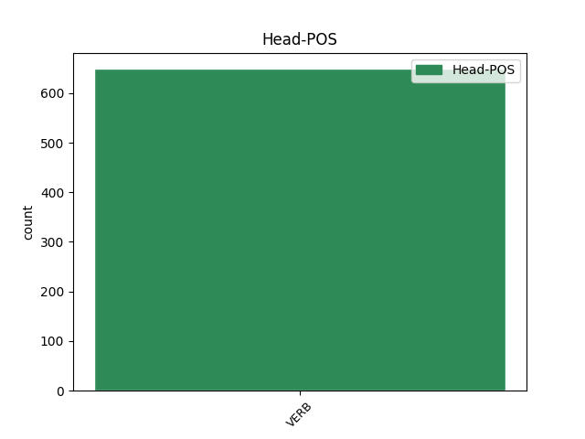

Distribution of features within this leaf

Agreement Rules sorted by frequency.
- When the dependent token is the modifer(mod) of the head token,
1 ὁ _ _ _ _ 0 _ _ _
2 δὲ _ _ _ _ 0 _ _ _
3 δῆμος _ _ _ _ 0 _ _ _
4 τῶν _ _ _ _ 0 _ _ _
5 Ἀθηναίων _ _ _ _ 0 _ _ _
6 δεκάτην _ _ _ _ 0 _ _ _
7 ἐξελόμενος _ _ _ _ 0 _ _ _
8 ἐκ _ _ _ _ 0 _ _ _
9 τῶν _ _ _ _ 0 _ _ _
10 λαφύρων _ _ _ _ 0 _ _ _
11 ἀνέθηκε _ _ _ _ 0 _ _ _
12 τῷ _ _ _ _ 0 _ _ _
13 θεῷ _ _ _ _ 0 _ _ _
14 , _ _ _ _ 0 _ _ _
15 καὶ _ _ _ _ 0 _ _ _
16 τὴν _ _ _ _ 0 _ _ _
17 ἐπιγραφὴν _ _ _ _ 0 _ _ _
18 ἐπὶ _ _ _ _ 0 _ _ _
19 τὸ _ _ _ _ 0 _ _ _
20 κατασκευασθὲν _ _ _ _ 0 _ _ _
21 ἀνάθημα _ _ _ _ 0 _ _ _
22 ἐνέγραψε _ _ _ _ 0 _ _ _
23 τήνδε _ _ _ _ 0 _ _ _
24 , _ _ _ _ 0 _ _ _
25 ἐξ _ _ _ _ 0 _ _ _
26 οὗ _ _ _ _ 0 _ _ _
27 γ̓ _ _ _ _ 0 _ _ _
28 Εὐρώπην _ _ _ _ 0 _ _ _
29 Ἀσίας _ _ _ _ 0 _ _ _
30 δίχα _ _ _ _ 0 _ _ _
31 πόντος _ _ _ _ 0 _ _ _
32 ἔνειμε νέμω VERB v3saia--- Mood=Ind|Number=Sing|Person=3|Tense=Past|VerbForm=Fin|Voice=Act 44 mod _ _
33 καὶ _ _ _ _ 0 _ _ _
34 πόλιας _ _ _ _ 0 _ _ _
35 θνητῶν _ _ _ _ 0 _ _ _
36 θοῦρος _ _ _ _ 0 _ _ _
37 Ἄρης _ _ _ _ 0 _ _ _
38 ἐπέχει _ _ _ _ 0 _ _ _
39 , _ _ _ _ 0 _ _ _
40 οὐδέν _ _ _ _ 0 _ _ _
41 πω _ _ _ _ 0 _ _ _
42 τοιοῦτον _ _ _ _ 0 _ _ _
43 ἐπιχθονίων _ _ _ _ 0 _ _ _
44 γένετ̓ γίγνομαι VERB v3saim--- Mood=Ind|Number=Sing|Person=3|Tense=Past|VerbForm=Fin|Voice=Mid 0 _ _ _
45 ἀνδρῶν _ _ _ _ 0 _ _ _
46 ἔργον _ _ _ _ 0 _ _ _
47 ἐν _ _ _ _ 0 _ _ _
48 ἠπείρῳ _ _ _ _ 0 _ _ _
49 καὶ _ _ _ _ 0 _ _ _
50 κατὰ _ _ _ _ 0 _ _ _
51 πόντον _ _ _ _ 0 _ _ _
52 ἅμα _ _ _ _ 0 _ _ _
53 . _ _ _ _ 0 _ _ _
1 καὶ _ _ _ _ 0 _ _ _
2 σὸν _ _ _ _ 0 _ _ _
3 διδάξω διδάσκω VERB v1sfia--- Mood=Ind|Number=Sing|Person=1|Tense=Fut|VerbForm=Fin|Voice=Act 0 _ _ _
4 πατέρα _ _ _ _ 0 _ _ _
5 ποῖα _ _ _ _ 0 _ _ _
6 χρὴ χρή VERB v3spia--- Mood=Ind|Number=Sing|Person=3|Tense=Pres|VerbForm=Fin|Voice=Act 3 comp:obj _ _
7 λέγειν _ _ _ _ 0 _ _ _
8 . _ _ _ _ 0 _ _ _
1 σκοπεῖτε σκοπέω VERB v2ppma--- Mood=Imp|Number=Plur|Person=2|Tense=Pres|VerbForm=Fin|Voice=Act 0 _ _ _
2 , _ _ _ _ 0 _ _ _
3 κἀμείβεσθε ἀμείβω VERB v2ppme--- Mood=Imp|Number=Plur|Person=2|Tense=Pres|VerbForm=Fin|Voice=Mid 1 parataxis _ _
4 τόνδε _ _ _ _ 0 _ _ _
5 τὸν _ _ _ _ 0 _ _ _
6 τρόπον _ _ _ _ 0 _ _ _
7 , _ _ _ _ 0 _ _ _
8 ὅπως _ _ _ _ 0 _ _ _
9 ἂν _ _ _ _ 0 _ _ _
10 ὑμῖν _ _ _ _ 0 _ _ _
11 πρᾶγος _ _ _ _ 0 _ _ _
12 εὖ _ _ _ _ 0 _ _ _
13 νικᾷ _ _ _ _ 0 _ _ _
14 τόδε _ _ _ _ 0 _ _ _
15 . _ _ _ _ 0 _ _ _
1 ἐπαρθεὶς _ _ _ _ 0 _ _ _
2 γὰρ _ _ _ _ 0 _ _ _
3 ταῖς _ _ _ _ 0 _ _ _
4 εὐτυχίαις _ _ _ _ 0 _ _ _
5 τὴν _ _ _ _ 0 _ _ _
6 μὲν _ _ _ _ 0 _ _ _
7 Λακωνικὴν _ _ _ _ 0 _ _ _
8 ἀγωγὴν _ _ _ _ 0 _ _ _
9 ἐστύγησε στυγέω VERB v3saia--- Mood=Ind|Number=Sing|Person=3|Tense=Past|VerbForm=Fin|Voice=Act 0 _ _ _
10 , _ _ _ _ 0 _ _ _
11 τὴν _ _ _ _ 0 _ _ _
12 δὲ _ _ _ _ 0 _ _ _
13 τῶν _ _ _ _ 0 _ _ _
14 Περσῶν _ _ _ _ 0 _ _ _
15 ἀκολασίαν _ _ _ _ 0 _ _ _
16 καὶ _ _ _ _ 0 _ _ _
17 τρυφὴν _ _ _ _ 0 _ _ _
18 ἐμιμήσατο _ _ _ _ 0 _ _ _
19 , _ _ _ _ 0 _ _ _
20 ὃν _ _ _ _ 0 _ _ _
21 ἥκιστα _ _ _ _ 0 _ _ _
22 ἐχρῆν χρή VERB v3siia--- Aspect=Imp|Mood=Ind|Number=Sing|Person=3|Tense=Past|VerbForm=Fin|Voice=Act 9 subj _ _
23 ζηλῶσαι _ _ _ _ 0 _ _ _
24 τὰ _ _ _ _ 0 _ _ _
25 τῶν _ _ _ _ 0 _ _ _
26 βαρβάρων _ _ _ _ 0 _ _ _
27 ἐπιτηδεύματα _ _ _ _ 0 _ _ _
28 · _ _ _ _ 0 _ _ _
1 καὶ _ _ _ _ 0 _ _ _
2 γὰρ _ _ _ _ 0 _ _ _
3 ἐπὶ _ _ _ _ 0 _ _ _
4 τὰ _ _ _ _ 0 _ _ _
5 κράνεα _ _ _ _ 0 _ _ _
6 λόφους _ _ _ _ 0 _ _ _
7 ἐπιδέεσθαι _ _ _ _ 0 _ _ _
8 Κᾶρες _ _ _ _ 0 _ _ _
9 εἰσὶ εἰμί VERB v3ppia--- Mood=Ind|Number=Plur|Person=3|Tense=Pres|VerbForm=Fin|Voice=Act 0 _ _ _
10 οἱ _ _ _ _ 0 _ _ _
11 καταδέξαντες _ _ _ _ 0 _ _ _
12 καὶ _ _ _ _ 0 _ _ _
13 ἐπὶ _ _ _ _ 0 _ _ _
14 τὰς _ _ _ _ 0 _ _ _
15 ἀσπίδας _ _ _ _ 0 _ _ _
16 τὰ _ _ _ _ 0 _ _ _
17 σημήια _ _ _ _ 0 _ _ _
18 ποιέεσθαι _ _ _ _ 0 _ _ _
19 , _ _ _ _ 0 _ _ _
20 καὶ _ _ _ _ 0 _ _ _
21 ὄχανα _ _ _ _ 0 _ _ _
22 ἀσπίσι _ _ _ _ 0 _ _ _
23 οὗτοι _ _ _ _ 0 _ _ _
24 εἰσὶ εἰμί VERB v3ppia--- Mood=Ind|Number=Plur|Person=3|Tense=Pres|VerbForm=Fin|Voice=Act 9 comp:pred _ _
25 οἱ _ _ _ _ 0 _ _ _
26 ποιησάμενοι _ _ _ _ 0 _ _ _
27 πρῶτοι _ _ _ _ 0 _ _ _
28 · _ _ _ _ 0 _ _ _
1 σὺ _ _ _ _ 0 _ _ _
2 δὴ _ _ _ _ 0 _ _ _
3 εἰ _ _ _ _ 0 _ _ _
4 μεγάλως _ _ _ _ 0 _ _ _
5 προθυμέαι _ _ _ _ 0 _ _ _
6 Μασσαγετέων _ _ _ _ 0 _ _ _
7 πειρηθῆναι _ _ _ _ 0 _ _ _
8 , _ _ _ _ 0 _ _ _
9 φέρε φέρω VERB v2spma--- Mood=Imp|Number=Sing|Person=2|Tense=Pres|VerbForm=Fin|Voice=Act 17 vocative _ _
10 μόχθον _ _ _ _ 0 _ _ _
11 μὲν _ _ _ _ 0 _ _ _
12 τὸν _ _ _ _ 0 _ _ _
13 ἔχεις _ _ _ _ 0 _ _ _
14 ζευγνὺς _ _ _ _ 0 _ _ _
15 τὸν _ _ _ _ 0 _ _ _
16 ποταμὸν _ _ _ _ 0 _ _ _
17 ἄπες ἀφίημι VERB v2sama--- Mood=Imp|Number=Sing|Person=2|Tense=Past|VerbForm=Fin|Voice=Act 0 _ _ _
18 , _ _ _ _ 0 _ _ _
19 σὺ _ _ _ _ 0 _ _ _
20 δὲ _ _ _ _ 0 _ _ _
21 ἡμέων _ _ _ _ 0 _ _ _
22 ἀναχωρησάντων _ _ _ _ 0 _ _ _
23 ἀπὸ _ _ _ _ 0 _ _ _
24 τοῦ _ _ _ _ 0 _ _ _
25 ποταμοῦ _ _ _ _ 0 _ _ _
26 τριῶν _ _ _ _ 0 _ _ _
27 ἡμερέων _ _ _ _ 0 _ _ _
28 ὁδὸν _ _ _ _ 0 _ _ _
29 διάβαινε _ _ _ _ 0 _ _ _
30 ἐς _ _ _ _ 0 _ _ _
31 τὴν _ _ _ _ 0 _ _ _
32 ἡμετέρην _ _ _ _ 0 _ _ _
33 · _ _ _ _ 0 _ _ _
1 εἶπαν εἶπον VERB v3paia--- Mood=Ind|Number=Plur|Person=3|Tense=Past|VerbForm=Fin|Voice=Act 0 _ _ _
2 πρὸς _ _ _ _ 0 _ _ _
3 ταῦτα _ _ _ _ 0 _ _ _
4 οἱ _ _ _ _ 0 _ _ _
5 Μάγοι _ _ _ _ 0 _ _ _
6 ὦ _ _ _ _ 0 _ _ _
7 βασιλεῦ _ _ _ _ 0 _ _ _
8 , _ _ _ _ 0 _ _ _
9 καὶ _ _ _ _ 0 _ _ _
10 αὐτοῖσι _ _ _ _ 0 _ _ _
11 ἡμῖν _ _ _ _ 0 _ _ _
12 περὶ _ _ _ _ 0 _ _ _
13 πολλοῦ _ _ _ _ 0 _ _ _
14 ἐστι εἰμί VERB v3spia--- Mood=Ind|Number=Sing|Person=3|Tense=Pres|VerbForm=Fin|Voice=Act 1 udep _ _
15 κατορθοῦσθαι _ _ _ _ 0 _ _ _
16 ἀρχὴν _ _ _ _ 0 _ _ _
17 τὴν _ _ _ _ 0 _ _ _
18 σήν _ _ _ _ 0 _ _ _
19 . _ _ _ _ 0 _ _ _
1 ἦ _ _ _ _ 0 _ _ _
2 μὲν _ _ _ _ 0 _ _ _
3 δή _ _ _ _ 0 _ _ _
4 ποτ̓ _ _ _ _ 0 _ _ _
5 ἐμεῦ _ _ _ _ 0 _ _ _
6 πάρος _ _ _ _ 0 _ _ _
7 ἔκλυες κλύω VERB v2saia--- Mood=Ind|Number=Sing|Person=2|Tense=Past|VerbForm=Fin|Voice=Act 0 _ _ _
8 εὐξαμένοιο _ _ _ _ 0 _ _ _
9 , _ _ _ _ 0 _ _ _
10 τίμησας τιμάω VERB v2saia--- Mood=Ind|Number=Sing|Person=2|Tense=Past|VerbForm=Fin|Voice=Act 7 appos _ _
11 μὲν _ _ _ _ 0 _ _ _
12 ἐμέ _ _ _ _ 0 _ _ _
13 , _ _ _ _ 0 _ _ _
14 μέγα _ _ _ _ 0 _ _ _
15 δ̓ _ _ _ _ 0 _ _ _
16 ἴψαο _ _ _ _ 0 _ _ _
17 λαὸν _ _ _ _ 0 _ _ _
18 Ἀχαιῶν _ _ _ _ 0 _ _ _
19 · _ _ _ _ 0 _ _ _
Disagree Examples:
1 καὶ _ _ _ _ 0 _ _ _
2 ἐὰν _ _ _ _ 0 _ _ _
3 μὲν _ _ _ _ 0 _ _ _
4 τίς _ _ _ _ 0 _ _ _
5 σου _ _ _ _ 0 _ _ _
6 πύθηται πυνθάνομαι VERB v3sase--- Mood=Sub|Number=Sing|Person=3|Tense=Past|VerbForm=Fin|Voice=Mid 0 _ _ _
7 τίνες _ _ _ _ 0 _ _ _
8 ἦσαν εἰμί VERB v3piia--- Aspect=Imp|Mood=Ind|Number=Plur|Person=3|Tense=Past|VerbForm=Fin|Voice=Act 6 comp:obj _ _
9 οἱ _ _ _ _ 0 _ _ _
10 εἰς _ _ _ _ 0 _ _ _
11 τὸν _ _ _ _ 0 _ _ _
12 δούρειον _ _ _ _ 0 _ _ _
13 ἵππον _ _ _ _ 0 _ _ _
14 ἐγκατακλεισθέντες _ _ _ _ 0 _ _ _
15 , _ _ _ _ 0 _ _ _
16 ἑνὸς _ _ _ _ 0 _ _ _
17 καὶ _ _ _ _ 0 _ _ _
18 δευτέρου _ _ _ _ 0 _ _ _
19 ἴσως _ _ _ _ 0 _ _ _
20 ἐρεῖς _ _ _ _ 0 _ _ _
21 ὄνομα _ _ _ _ 0 _ _ _
22 · _ _ _ _ 0 _ _ _
1 ὡς _ _ _ _ 0 _ _ _
2 δ̓ _ _ _ _ 0 _ _ _
3 ἐγὼ _ _ _ _ 0 _ _ _
4 θυμοφθορῶ θυμοφθορέω VERB v1spia--- Mood=Ind|Number=Sing|Person=1|Tense=Pres|VerbForm=Fin|Voice=Act 7 comp:obj _ SpaceAfter=No
5 , _ _ _ _ 0 _ _ _
6 μήτ̓ _ _ _ _ 0 _ _ _
7 ἐκμάθοις ἐκμανθάνω VERB v2saoa--- Mood=Opt|Number=Sing|Person=2|Tense=Past|VerbForm=Fin|Voice=Act 0 _ _ _
8 παθοῦσα _ _ _ _ 0 _ _ _
9 νῦν _ _ _ _ 0 _ _ _
10 δ̓ _ _ _ _ 0 _ _ _
11 ἄπειρος _ _ _ _ 0 _ _ _
12 εἶ _ _ _ _ 0 _ _ _
13 . _ _ _ _ 0 _ _ _
1 ἴδ̓ εἶδον VERB v2sama--- Mood=Imp|Number=Sing|Person=2|Tense=Past|VerbForm=Fin|Voice=Act 0 _ _ _
2 , _ _ _ _ 0 _ _ _
3 ὦ _ _ _ _ 0 _ _ _
4 φίλα _ _ _ _ 0 _ _ _
5 γύναι _ _ _ _ 0 _ _ _
6 , _ _ _ _ 0 _ _ _
7 τάδ̓ _ _ _ _ 0 _ _ _
8 ἀντίπρῳρα _ _ _ _ 0 _ _ _
9 δή _ _ _ _ 0 _ _ _
10 σοι _ _ _ _ 0 _ _ _
11 βλέπειν _ _ _ _ 0 _ _ _
12 πάρεστ̓ πάρειμι VERB v3spia--- Mood=Ind|Number=Sing|Person=3|Tense=Pres|VerbForm=Fin|Voice=Act 1 parataxis _ _
13 ἐναργῆ _ _ _ _ 0 _ _ _
14 . _ _ _ _ 0 _ _ _
1 πρὸς _ _ _ _ 0 _ _ _
2 δὲ _ _ _ _ 0 _ _ _
3 δώματα _ _ _ _ 0 _ _ _
4 χωρῶμεν _ _ _ _ 0 _ _ _
5 ἤδη _ _ _ _ 0 _ _ _
6 πάντες _ _ _ _ 0 _ _ _
7 , _ _ _ _ 0 _ _ _
8 ὡς _ _ _ _ 0 _ _ _
9 σύ _ _ _ _ 0 _ _ _
10 θ̓ _ _ _ _ 0 _ _ _
11 οἷ _ _ _ _ 0 _ _ _
12 θέλεις ἐθέλω VERB v2spia--- Mood=Ind|Number=Sing|Person=2|Tense=Pres|VerbForm=Fin|Voice=Act 13 comp:obj _ _
13 σπεύδῃς σπεύδω VERB v2spsa--- Mood=Sub|Number=Sing|Person=2|Tense=Pres|VerbForm=Fin|Voice=Act 0 _ _ _
14 , _ _ _ _ 0 _ _ _
15 ἐγώ _ _ _ _ 0 _ _ _
16 τε _ _ _ _ 0 _ _ _
17 τἄνδον _ _ _ _ 0 _ _ _
18 ἐξαρκῆ _ _ _ _ 0 _ _ _
19 τιθῶ _ _ _ _ 0 _ _ _
20 . _ _ _ _ 0 _ _ _
1 ἐὰν _ _ _ _ 0 _ _ _
2 γὰρ _ _ _ _ 0 _ _ _
3 ἀμφίθρεπτον _ _ _ _ 0 _ _ _
4 αἷμα _ _ _ _ 0 _ _ _
5 τῶν _ _ _ _ 0 _ _ _
6 ἐμῶν _ _ _ _ 0 _ _ _
7 σφαγῶν _ _ _ _ 0 _ _ _
8 ἐνέγκῃ φέρω VERB v3sasa--- Mood=Sub|Number=Sing|Person=3|Tense=Past|VerbForm=Fin|Voice=Act 0 _ _ _
9 χερσίν _ _ _ _ 0 _ _ _
10 , _ _ _ _ 0 _ _ _
11 ᾗ _ _ _ _ 0 _ _ _
12 μελαγχόλους _ _ _ _ 0 _ _ _
13 ἔβαψεν βάπτω VERB v3saia--- Mood=Ind|Number=Sing|Person=3|Tense=Past|VerbForm=Fin|Voice=Act 8 mod _ _
14 ἰοὺς _ _ _ _ 0 _ _ _
15 θρέμμα _ _ _ _ 0 _ _ _
16 Λερναίας _ _ _ _ 0 _ _ _
17 ὕδρας _ _ _ _ 0 _ _ _
18 , _ _ _ _ 0 _ _ _
19 ἔσται _ _ _ _ 0 _ _ _
20 φρενός _ _ _ _ 0 _ _ _
21 σοι _ _ _ _ 0 _ _ _
22 τοῦτο _ _ _ _ 0 _ _ _
23 κηλητήριον _ _ _ _ 0 _ _ _
24 τῆς _ _ _ _ 0 _ _ _
25 Ἡρακλείας _ _ _ _ 0 _ _ _
26 , _ _ _ _ 0 _ _ _
27 ὥστε _ _ _ _ 0 _ _ _
28 μήτιν̓ _ _ _ _ 0 _ _ _
29 εἰσιδὼν _ _ _ _ 0 _ _ _
30 στέρξει _ _ _ _ 0 _ _ _
31 γυναῖκα _ _ _ _ 0 _ _ _
32 κεῖνος _ _ _ _ 0 _ _ _
33 ἀντὶ _ _ _ _ 0 _ _ _
34 σοῦ _ _ _ _ 0 _ _ _
35 πλέον _ _ _ _ 0 _ _ _
36 . _ _ _ _ 0 _ _ _